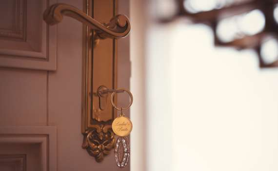
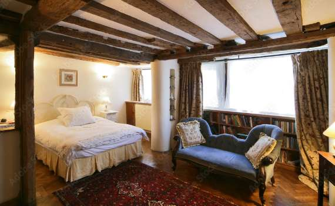

GUEST ROOM
ゲストルーム
星と自然を楽しむ、余裕あるゲストルーム
阿蘇くじゅう国立公園、標高600mに位置する1986年創設の西洋料理宿。
本館は落ち着いた雰囲気のお部屋で「余裕のある大人の滞在」がコンセプト。
本館前には、約2400坪の広々としたガーデンがあり、阿蘇の四季折々の変化を楽しませてくれます。
ガーデン中には、森にたたずむ「別館」があります。別館では、
イギリスの古いレンガや古木などを使った、かわいい内装の森の別荘が楽しめます。
本館と別館、どちらも個性的な２つのお部屋タイプがあなたをお待ちしております。
しっとりとたたずむ 英国調の本館
約2400坪の森のガーデンと芝に囲まれて、しっとりとたたずむ英国調の本館。室内には石造りの電気暖炉をそなえ、随所に落ち着いた大人の雰囲気を感じさせます。 お部屋はレストランや天文台に近く、ご宿泊全体を通してあまり大きく移動する必要がありません。全室定員は２名で、お部屋によってはエクストラベッドをひとつご用意することが出来ます。

本館ツイン
「森のアトリエ」本館の階段をのぼった2階にある、2021年3月にリニューアルしたお部屋です。
「落ち着いた雰囲気のお部屋で、大人の余裕ある滞在を楽しみたい」、そんな方におすすめです。
ヨーロッパ田園の別荘造り「別館・コンドミニアム」
約2400坪の広々としたガーデンの森にたたずむ「別館」。
英国のレンガや古木を用いた別館のたたずまいは、本館とは少し違う落ち着いた雰囲気があります。
玄関が独立した別荘風になっており、ヨーロッパの田園の別荘に行ったような気持ちになれます。
ありのままの自然を楽しむ伝統的な森の別荘での1日をお楽しみいただけることでしょう。
別館ツイン2階
森のガーデンに建つ別館の階段をのぼった2階にある、欧州田園別荘をイメージしたクラシックなツインルームです。
広めのお部屋の中にはダイニングテーブル、大理石のバスなどをそなえます。
F&Q
-
Q アニメティはありますか？
浴衣・タオル・歯ブラシなどをご用意しております。バス付きのお部屋にはバスタオルもあります。 ドライヤーは、フロントにご用意しております。お気軽に声をお掛けください。
-
Q 子どもは何歳まで「添い寝」が可能ですか？
６歳までのお子さまとなっております。小学生以上のお子さまは『子ども料金』となります。
-

Qチェックイン・チェックアウトは何時ですか？
チェックインは16時、チェックアウトは11時です。
-

Q 客室で煙草は吸えますか？
客室・レストラン・共有スペースは禁煙となっております。１階ロビーに喫煙コーナーがありますので、そちらをご利用ください。